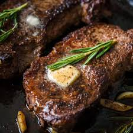

Steak

Description
Some really good steak.
Easy to make and only takes 15 minutes!
Ingredients
- 2 lbs New York Strip Steaks (2 steaks)
- 1/2 Tbsp avocado oil or other high heat cooking oil
- 1 1/2 tsp sea salt
- 1 tsp black pepper, freshly ground
- 2 Tbsp unsalted butter
- 2 cloves garlic, peeled and quartered
- 1 sprig fresh rosemary
Steps
- Dry steak with paper towels then season with salt and pepper
- Heat up the pan then add the oil when it is hot. Let the oil sit on medium heat until it shimmers, then add steak
- Cook each side for 4 minutes on each side, flipping however often you want
- When both sides are done, reduce heat to low and add the butter, garlic, and rosemary to the pan. Then baste the steak for a minute by spooning the butter onto the steak
- Transfer steak to cutting board and loosely cover and rest for about 10 minutes before serving